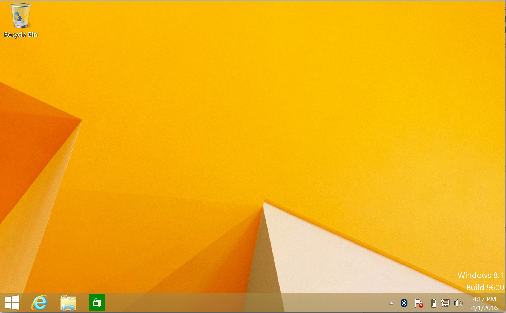

(軟體篇)Windows 7操作系統 <<
Previous Next >> (軟體篇)Windows 10操作系統
(軟體篇)Windows 8操作系統
總覽
微軟用Windows 8 / 8.1重組了Windows產品陣容，並且從根本上改變了Windows 7的用戶界面，以期預期移動設備市場的增長。 Windows 8 / 8.1具有本地觸摸屏功能，可容納平板電腦和Windows手機。
本區討論Windows 8 / 8.1操作系統的四個不同版本和版本及其功能。 我們將探討Windows 8 / 8.1操作系統的最低要求，並學習如何安裝它。
Overview
Microsoft restructured the Windows product lineup with Windows 8/8.1, and radically altered the user interface from that of Windows 7 in anticipation of the growing mobile device market. Windows 8/8.1 is designed with native touchscreen ability to accommodate tablets and Windows phones.
This module discusses the four different versions and editions of the Windows 8/8.1 operating system, along with its features. We will explore the minimum requirements for the Windows 8/8.1 operating system and learn how to install it.
Windows 8 / 8.1：版本和版本
Windows 8 / 8.1有四個不同版本，每個版本具有32位或64位版本，但Windows RT除外，後者僅在32位版本中可用：
●Windows 8 / 8.1（有時稱為“核心”）
●Windows 8 / 8.1 Pro
●Windows 8 / 8.1企業版
●Windows 8 / 8.1 RT（僅32位）
Windows 8 / 8.1中的新增功能/更新功能
Windows 8 / 8.1對Windows的早期版本進行了許多更改。其中一些變化得到了很好的接受；其他人則不如。我們將在下面討論一些次要更改，但首先要討論一個主要更改。在Windows 8中，Microsoft對桌面以及用戶與桌面的交互方式進行了重大更改。隨著平板電腦市場實力的增長以及蜂窩電話的融合（都受到觸摸屏的影響），微軟希望在Windows手機，平板電腦，筆記本電腦和台式機之間提供統一的界面。 Windows界面的這種重新構想稱為“ Metro”。
New/Updated Features in Windows 8/8.1
Windows 8/8.1 introduced quite a few changes from previous versions of Windows. Some of these changes were received well; others not as well. We’ll discuss some of the minor changes below, but let’s start by discussing a major change. With Windows 8, Microsoft made significant changes to the Desktop and the way users interact with it. With the strength of the tablet market growing and the convergence of cellular telephones, both heavily influenced by touchscreens, Microsoft wanted to offer a unified interface between Windows phones, tablets, laptops, and desktops. This reimagining of the Windows interface is called “Metro.”
Metro接口
Windows 8 / 8.1的最大變化是，登錄後，您將獲得全新的Metro界面，而不再是傳統的Windows桌面用戶的歡迎。此界面由標準應用程序驅動的圖塊組組成，並且Microsoft還包括僅通過Metro界面運行的新應用程序。這些磁貼中的一些包含靜態圖像，單擊這些靜態圖像將簡單地啟動整個應用程序，切換到傳統桌面，而其他一些則是“實時磁貼”，顯示來自應用程序的信息，例如天氣信息，照片或電子郵件通知。也提供兩種不同版本的Internet Explorer。在應用程序方面，Internet Explorer更易於觸摸，並且默認為閱讀模式，使其更適合移動設備。
.png)

支持USB 3.0
Windows 8 / 8.1引入的高級更改之一是對USB 3.0的本機支持。 USB 3.0允許用戶連接許多不同類型的外圍設備-從打印機和掃描儀到相機，麥克風，耳機，電話等。 與USB 2.0相比，USB 3.0具有兩個顯著優勢。 首先，USB 3.0支持更快的數據傳輸速度：每秒5 GB，而USB 2.0最大每秒480 MB。 數據傳輸速度快了十倍多。 其次，USB 3.0為連接的設備提供比USB 2.0更大的功率，從而支持需要更多功率的新型外圍設備，並允許外部設備更快地充電。
Support for USB 3.0
One of the under-the-hood changes introduced with Windows 8/8.1 is native support for USB 3.0. USB 3.0 allows users to connect many different types of peripherals — from printers and scanners to cameras, microphones, headsets, phones, and more. USB 3.0 has two significant advantages over USB 2.0. First, USB 3.0 supports much faster data transfer: 5 GB per second, as opposed to the USB 2.0 max of 480 MB per second. That’s a little over ten times faster data transfer. Second, USB 3.0 provides more power to attached devices than USB 2.0, supporting newer peripherals that demand more power, and allows external devices to charge faster.
支持Microsoft帳戶
除了對界面進行重大更改之外，Microsoft還對用戶帳戶進行了重要更改。用戶現在可以選擇創建本地帳戶或連接到在線Microsoft帳戶。本地帳戶是特定於計算機的，並且以前受Windows以前版本的支持。用戶名和密碼帳戶位於標準對等網絡中的特定計算機上，或者在受管企業網絡的情況下，特定於域帳戶數據庫中的用戶。
Support for Microsoft Accounts
In addition to a radical change to the interface, Microsoft introduced an important change to user accounts. Users now have the option to either create a local account or connect to an online Microsoft account. Local accounts are machine specific and are traditionally supported by previous versions of Windows. The username and password account resides on a specific computer in a standard peer-to-peer network, or, in the case of a managed Enterprise network, is specific to the user in the domain account database.
另一方面，使用Microsoft帳戶是具有MSN，Outlook或Hotmail帳戶的所有Windows用戶可用的一項新功能，並且與企業域帳戶具有相似的功能，因為用戶設置與登錄信息一起使用。您可以使用任何先前列出的MSN電子郵件帳戶的登錄信息，也可以在https：// www上設置新帳戶。微軟。 com / zh-我們/帳戶/。現在，這可以將您在任何Windows 8 / 8.1計算機上的用戶設置鏈接到Microsoft服務，例如電子郵件，XBox Live，桌面設置，從Windows應用商店安裝的應用程序以及OneDrive。使用Microsoft帳戶登錄的優點是，無論您在哪里工作，都可以訪問OneDrive上的所有文件，並且具有相同的外觀。除了使用與帳戶關聯的默認密碼外，用戶還可以選擇在平板電腦上添加四位數的PIN或圖片密碼。 PIN的優點在於，您無需鍵入密碼即可訪問所有服務，從而增加了一層安全保護，並且登錄速度更快。圖片密碼使用觸摸技術在設置時選擇圖片的區域。同樣，這消除了使用全局帳戶密碼的風險。下面的第二個屏幕截圖顯示了您可以選擇同步的項目。
Using a Microsoft account, on the other hand, is a new feature available to all Windows users with an MSN, Outlook, or Hotmail account, and has similar features as an Enterprise domain account because the user settings go with the login information. You can use the login information for any of the previously listed MSN email accounts, or you can set up a new account athttps :// www . microsoft . com / en - us / account /. This now links your user settings on any Windows 8/8.1 machine for such Microsoft services as email, XBox Live, Desktop settings, apps installed from the Windows store, and OneDrive. The advantage to using your Microsoft account to login is that you have access to all files on OneDrive as well as having the same look and feel regardless of where you are working. In addition to using the default password associated with the account, the user can opt to add a four-digit PIN, or a picture password on a tablet. The advantage of the PIN is that you are adding a layer of security by not having to type the password to access all of your services, and it is a quicker login. The picture password uses touch technology to select a region of the picture as you set it. Again, this eliminates the exposure of using the global account password. The second screenshot below shows the items you can elect to synchronize.
(軟體篇)Windows 7操作系統 <<
Previous Next >> (軟體篇)Windows 10操作系統